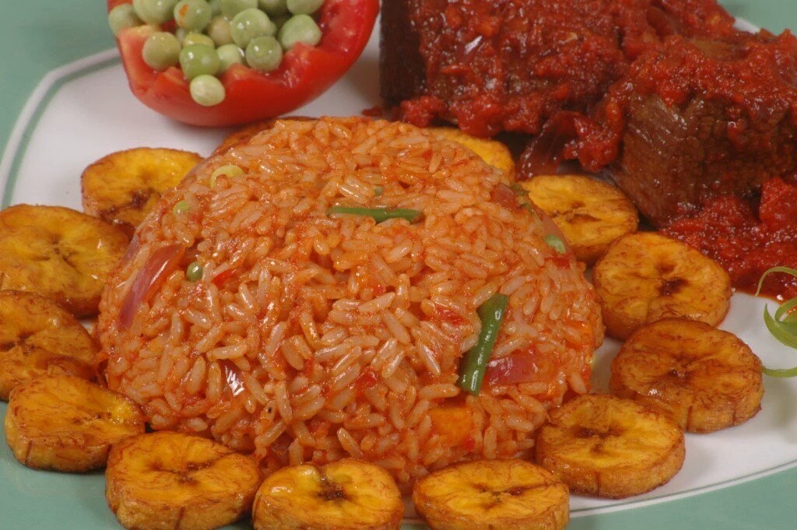

West AfricaNigeria · West Africa
Nigerian Jollof Rice
Jollof takes its name from the Wolof people of the Senegambia region, whose rice dishes are widely regarded as its ancestor. It has since become a shared staple across West Africa, and Nigeria, Ghana and Senegal each cook it their own way, which fuels a good-natured rivalry over whose is best. In Nigeria it is the centerpiece of celebrations, and "party jollof", cooked in huge pots over firewood, is prized for its smoky flavor.
- Prep
- 20 min
- Cook
- 1 hr
- Difficulty
- Medium
- Serves
- 6
Ingredients
6 servings
- 3 cups long-grain parboiled rice
- 4 large tomatoes ripe, roughly chopped
- 2 red bell peppers seeded
- 1 Scotch bonnet pepper seeded for less heat
- 2 medium onions for blending
- 1 medium onion thinly sliced
- ⅓ cup vegetable oil
- 3 tbsp tomato paste
- 2 cups chicken or vegetable stock
- 2 tsp curry powder
- 1 tsp dried thyme
- 2 bay leaves whole
- To taste salt
Cooking instructions
- Blend the tomatoes, red bell peppers, Scotch bonnet and the onions for blending until smooth. Pour into a saucepan and boil for 10 to 15 minutes, until reduced by about half.
- Heat the oil in a heavy-based pot over medium heat. Fry the sliced onion for 4 to 5 minutes, until soft and golden. Stir in the tomato paste and fry for 3 to 4 minutes, until it darkens.
- Add the reduced pepper mixture, curry powder, thyme, bay leaves and salt. Fry for about 10 minutes, stirring often, until the oil begins to rise to the surface.
- Rinse the rice until the water runs clear, then stir it into the sauce. Pour in the stock so that it just reaches the level of the rice.
- Cover the pot tightly, using foil under the lid if needed to trap the steam. Cook on the lowest heat for about 30 minutes, stirring once halfway. Add a splash of stock if the pot looks dry.
- For a smoky finish, raise the heat for the last 3 to 5 minutes and let the bottom of the rice catch lightly without burning. Take off the heat and rest, covered, for 5 minutes.
- Remove the bay leaves, fluff with a fork, and serve with fried plantain, grilled chicken or coleslaw.
Video tutorial
Nutrition facts (approximate)
| Nutrient | Per serving (approx.) |
|---|---|
| Energy | ~480 kcal |
| Protein | ~9 g |
| Carbohydrates | ~80 g |
| Fat | ~14 g |
| Fiber | ~4 g |